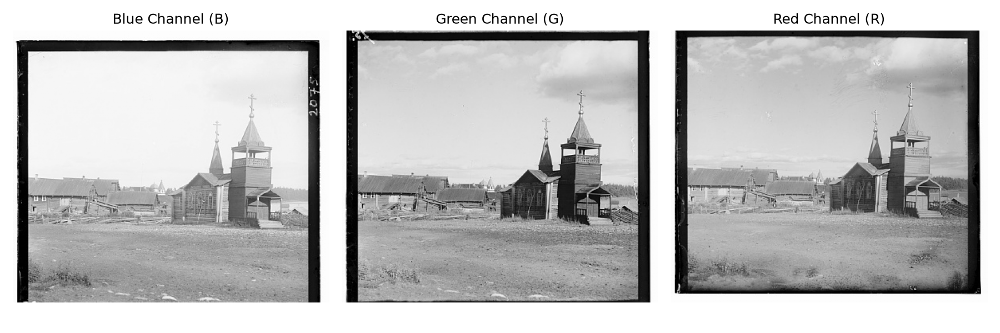
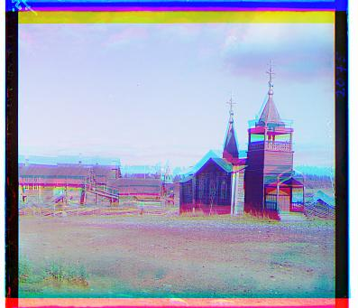
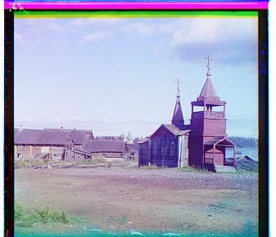
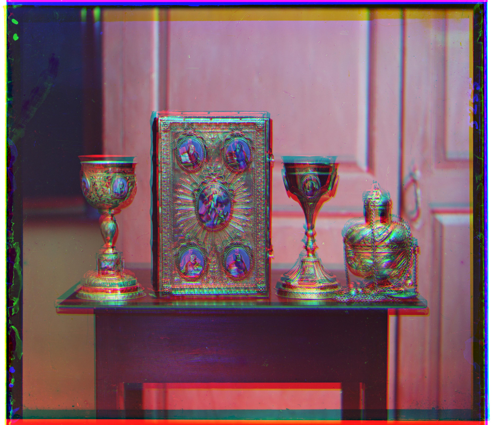
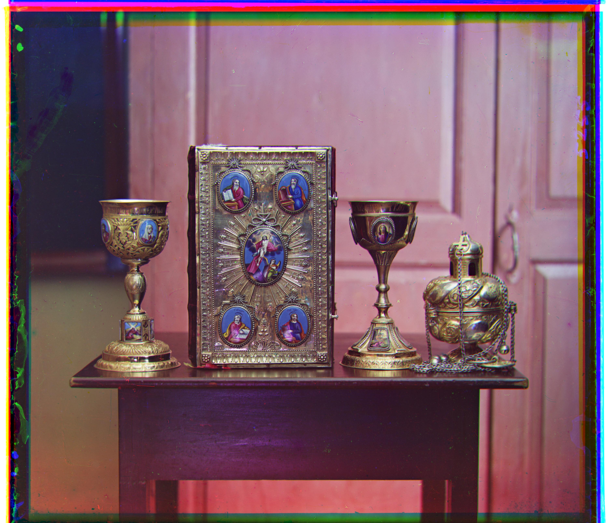
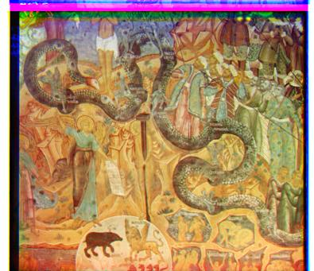
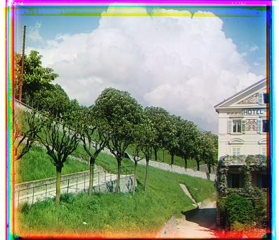
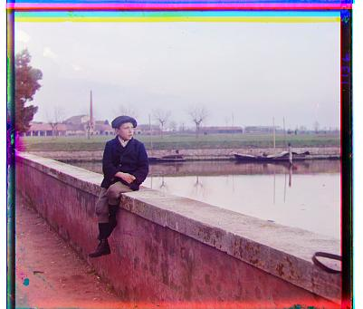
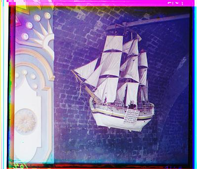

Automated RGB Colorization and Image Alignment Pipeline
In the early 20th century, Russian photographer Sergei Mikhailovich Prokudin-Gorskii recorded history in color by taking three successive monochrome glass plate photographs using Blue, Green, and Red optical filters.
Because the glass plates were exposed sequentially, physical movement and small camera shifts occurred between exposures. Stacking these plates raw creates severe color fringing. The goal of this project is to build an automated image processing pipeline that splits, aligns, and outputs sharp RGB composites.


My initial baseline approach implemented an exhaustive single-scale displacement search. Using the Blue channel as a static anchor, the Green and Red channels were iteratively shifted over a [-15, 15] pixel search window.
To measure image similarity, I evaluated both L2 Norm (Mean Squared Error) and Normalized Cross-Correlation (NCC). NCC proved significantly more reliable than L2 because it normalizes brightness variations across different monochromatic channels.
cathedral.jpg), single-scale search aligned channels cleanly in approximately ~0.4 seconds.
cathedral.jpg (Single-Scale NCC) | Computed Offsets: G(0, 4), R(0, 13).
When processing high-resolution scans (`.u.jpg`, `.a.jpg`, `.tif`), physical channel shifts often exceed 100+ pixels. A single-scale exhaustive search across a [-150, 150] pixel grid would require evaluating over 90,000 shift combinations per channel, quickly exceeding practical execution times.
To keep runtimes under a few seconds while covering large search radii, I implemented a recursive Image Pyramid:
[-15, 15] window.[-7, 7] window.
High-resolution scans cleanly illustrate the difference between the two approaches. On 01047u.jpg (Icon), single-scale search failed because the required displacement was far beyond 15 pixels. The search algorithm hit its boundary wall and stopped at (15, 15) for both channels, resulting in severe ghosting artifacts.
The Multi-Scale Pyramid bypassed this boundary limit effortlessly, discovering the true global displacements in ~14 seconds.


In images with complex color distributions like 01269v.jpg (mural depicting animals), raw pixel intensity matching introduces minor visual blur and misalignment. This happens because specific pigments (such as metallic gold or deep blue background dyes) reflect light differently through monochrome glass filters, causing brightness inversions.
Pipeline Refinements:

To confirm the pipeline's robustness on arbitrary glass plates outside the provided sample set, I downloaded three additional high-resolution images from the Library of Congress Prokudin-Gorskii archive:

loc-...00216v.jpg
loc-...00220v.jpg
loc-...00347v.jpgBelow is the full evaluation benchmark compiled across all provided sample images and custom Library of Congress downloads:
| Filename | Category | Single G,R (x,y) | Single Time | Pyramid G,R (x,y) | Pyr Time | Total Time |
|---|---|---|---|---|---|---|
00056v.jpg | Provided | (1, 6) / (1, 13) | 0.37s | (1, 6) / (1, 13) | 0.12s | 0.49s |
00125v.jpg | Provided | (2, 5) / (1, 10) | 0.36s | (2, 5) / (1, 10) | 0.12s | 0.48s |
00163v.jpg | Provided | (1, -3) / (1, -4) | 0.40s | (1, -3) / (1, -4) | 0.15s | 0.55s |
00458u.jpg | Provided | (9, 15) / (15, 15) ❌ | 1m 02s | (8, 43) / (33, 86) ✅ | 13.55s | 1m 16s |
00804v.jpg | Provided | (-2, 6) / (-4, 13) | 0.41s | (-2, 6) / (-4, 13) | 0.13s | 0.56s |
01007a.jpg | Provided | (13, 15) / (13, 15) ❌ | 1m 04s | (14, 60) / (13, 128) ✅ | 14.42s | 1m 18s |
01047u.jpg | Provided | (15, 15) / (15, 15) ❌ | 1m 04s | (19, 25) / (33, 71) ✅ | 14.08s | 1m 18s |
01164v.jpg | Provided | (2, 6) / (3, 11) | 0.39s | (2, 6) / (3, 11) | 0.12s | 0.52s |
01269v.jpg | Provided | (2, 6) / (3, 14) | 0.46s | (2, 6) / (3, 13) | 0.15s | 0.61s |
01522v.jpg | Provided | (2, 6) / (2, 13) | 0.38s | (2, 6) / (2, 13) | 0.12s | 0.50s |
01597v.jpg | Provided | (1, 7) / (1, 15) | 0.47s | (1, 7) / (1, 16) | 0.16s | 0.63s |
01598v.jpg | Provided | (0, 8) / (-1, 15) | 0.34s | (0, 8) / (-1, 16) | 0.12s | 0.46s |
01657u.jpg | Provided | (8, 15) / (-15, 15) ❌ | 1m 02s | (9, 56) / (13, 119) ✅ | 13.96s | 1m 16s |
01725u.jpg | Provided | (15, 15) / (15, -6) ❌ | 1m 02s | (44, 76) / (77, 161) ✅ | 14.25s | 1m 17s |
01728v.jpg | Provided | (1, 8) / (1, 15) | 0.41s | (1, 8) / (1, 18) | 0.20s | 0.63s |
01861a.jpg | Provided | (15, 15) / (15, 15) ❌ | 1m 02s | (38, 70) / (62, 146) ✅ | 13.85s | 1m 16s |
10131v.jpg | Provided | (2, 6) / (3, 12) | 0.59s | (2, 6) / (3, 12) | 0.12s | 0.73s |
31421v.jpg | Provided | (0, 8) / (0, 13) | 0.36s | (0, 8) / (0, 13) | 0.14s | 0.50s |
cathedral.jpg | Provided | (0, 4) / (0, 13) | 0.43s | (0, 4) / (0, 13) | 0.21s | 0.64s |
loc-...00216v.jpg | LoC Custom | (1, 4) / (4, 8) | 0.65s | (1, 3) / (4, 8) | 0.18s | 0.84s |
loc-...00220v.jpg | LoC Custom | (-1, 4) / (-1, 10) | 0.42s | (-1, 4) / (-1, 10) | 0.14s | 0.56s |
loc-...00347v.jpg | LoC Custom | (4, 4) / (9, 13) | 0.40s | (4, 4) / (8, 13) | 0.13s | 0.53s |